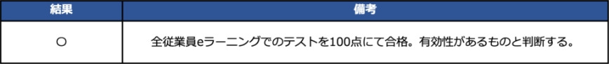
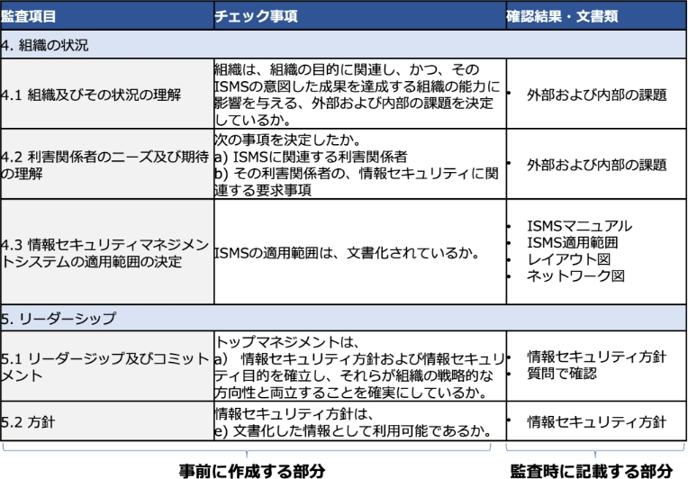
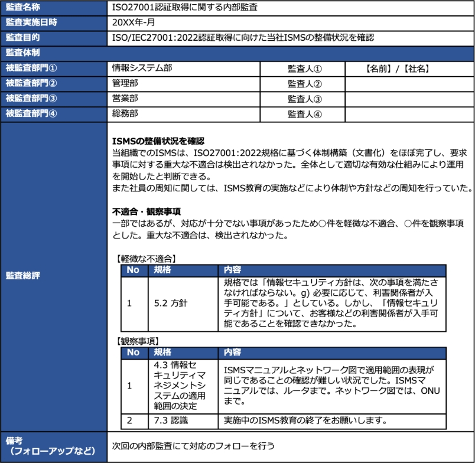
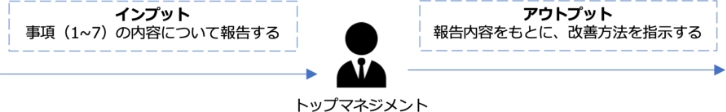
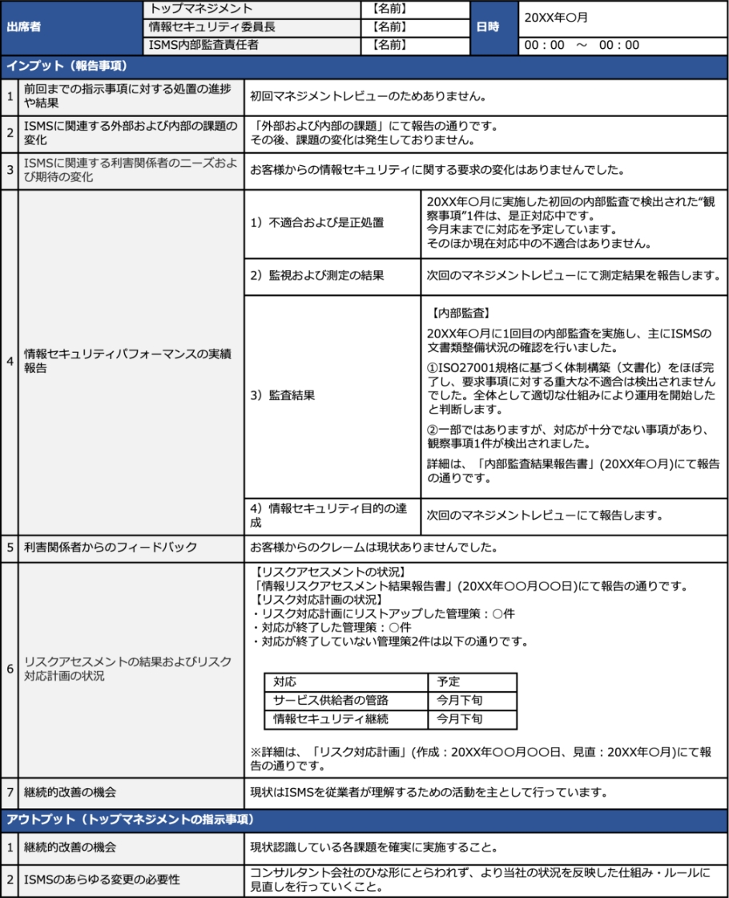

13-2-7. ISMS：9. パフォーマンス評価
「9. パフォーマンス評価」は、PDCAサイクルの「Check（評価）」に位置しており、定めた情報セキュリティ目標を達成するための取組（構築したISMS）が有効であるかどうかを評価します。
パフォーマンス評価
作成ドキュメント（例）
9.1 監視、測定、分析及び評価
情報セキュリティのパフォーマンスと、ISMSの有効性を評価します。
ISMS有効性評価表
9.2 内部監査
ISMSの適合性、有効性について、あらかじめ定めた間隔で監査を実施します。
- 内部監査チェックリスト
- 内部監査計画書
- 内部監査結果報告書
9.3 マネジメントレビュー
トップマネジメントが、ISMSの有効性を評価します。
マネジメントレビュー報告書
9.1 監視、測定、分析及び評価
作成するドキュメント
ISMS有効性評価表
ISMSの効果について判断するために、有効性評価を実施します。ISMSに沿って実施している活動が、情報セキュリティ目標の達成に繋がっているのか、有効に作用しているのかを評価し、課題があるのであれば改善することになります。前項で説明した通り、PDCAサイクルによる継続したスパイラルアップによって、改善し続けることが重要です。計画時に定めた評価指標および評価方法により、ISMSが有効だったか、そうではなかったかを判断します。この有効性の評価は、マネジメントレビューの際にトップマネジメントが実施するのが効果的です。
【計画】
情報セキュリティ目的
- お客様との契約および法的または規制要求事項を尊重し遵守する
- 情報セキュリティ事故を未然に防止する
- 情報セキュリティ上の脅威から情報資産を保護する
- 当社ISMSの意味を理解した活動の開始
評価指標
ISMS教育受講／合格 100％(全従業者)
【備考】
取組の初年度であるため、全従業者が活動に関与、さらには、活動を理解し、全社のセキュリティ目的の達成に向けた活動開始ができたことを確認する。
情報セキュリティ目的達成のための計画

【評価】
評価日：【20XX/00/00】
情報セキュリティ目的達成に関する評価結果
凡例 ○：有効 ×：有効ではない
-
情報セキュリティ目的達成のための計画には、計画時に定める実施事項、必要な資源、責任者、達成期限、評価方法を記載します。
※【計画】の詳しい記載方法については、「6. 計画」で説明しています。
- 情報セキュリティ目的達成に関する評価結果には、ISMSが有効だったか否かという結果を記載します。
9.2 内部監査
作成するドキュメント
- 内部監査チェックリスト
- 内部監査計画書
- 内部監査結果報告書
内部監査とは、社内のルールや扱っている文書がISO/IEC 27001の要求事項を満たしており、従業員などがそのルールを守って仕事をしているかどうかをチェックすることです。
内部監査結果報告書をもとに、マネジメントレビューで「自社のISMSはこのままでいいのか」「自社のISMSのどこに欠陥があり、どう修復しなくてはならないのか」を経営層が判断し、随時対策をとります。内部監査は一般的に以下のプロセスで進めます。
1．内部監査員の選定
内部監査とは、組織内部において、専門的知識を持った人が、経営者や役員などの立場にない第三者として、ISMSが適切に構築され、適正に運用されているかどうかを評価することです。内部監査員には、監査の公正さや客観性の観点から、監査対象となる部門に所属していない者を任命する必要があります。内部監査員に資格などは不要ですが、下記に当てはまるような人が適任です。社内に適した者がいない場合は、研修により内部監査員を育成したり、外部の専門家へ依頼したりするといった手段をとることが有効です。
- ISMSの内容を理解している人
- ISMSの内部監査の体制や実施方法といった手順に関する知識を有している人
- 自社のISMSを把握している人
- 監査対象となる部署の業務内容を把握している人
2．内部監査チェックリストの作成
内部監査員がチェックリストを作成します。事前にチェックリストを作成することで、監査するべき範囲やポイントが明確になったり、チェック漏れを減らせたり、内部監査員ごとの偏った評価を防止したりといった効果が期待できます。また、チェックリストは内部監査を行った文書記録とすることができます。
内部監査チェックリストの作成方法（例）
ISMSの項目に沿ってチェック事項をまとめ、内部監査を実施の際には確認したISMSの根拠となる確認結果や文書類を記録します。
3．内部監査の計画立案
内部監査の計画を立てます。いつ、誰が、どの部門の誰に、何についてチェックするか、といったことを事前に段取りしておきます。
内部監査計画書の作成方法（例）
- 監査概要：監査の名称、目的、テーマ、方法、基準を記載します。
- 詳細監査計画：監査の対象となる部門名、監査人名、監査への対応者名、監査実施の日時といった予定を記載します。
- 内部監査結果報告（予定）：監査結果の報告予定日と報告手段を記載します。
4．内部監査の実施
内部監査計画に沿って、内部監査チェックリストを用いて監査を実施します。
5．内部監査結果報告書の作成
内部監査の結果をとりまとめ、報告書を作成します。どの部署で、どのルールが守られなかったかといったことを明確にしておきます。内部監査結果報告書をもとに、経営層は自社のISMSをどのようにするか判断することになるため、内容に不明瞭な点や不足があると、適切な見直しができなくなってしまうため、注意が必要です。
内部監査結果報告書の作成方法（例）
9.3 マネジメントレビュー
作成するドキュメント
マネジメントレビュー報告書
マネジメントレビューとは、経営者（トップマネジメント）が行うレビュー活動です。トップマネジメントは、内部監査の結果や利害関係者からのフィードバックをもとに、組織のISMSが適切に運用されているかどうかを判断し、必要に応じて改善方法を指示します。この活動は、少なくとも年に1回定期的に実施することが求められています。トップマネジメントに報告した内容（インプット）と、トップマネジメントの指示や提案（アウトプット）を文書化したものが、マネジメントレビュー報告書です。
インプット、アウトプットに含める必要がある内容は以下の通りです。
インプットに含める必要がある事項
1. 前回までの指示事項に対する処置の進捗や結果
トップマネジメントから前回指示された改善活動の進捗状況や結果を記載します。初回の場合は記載しません。
2. ISMSに関連する外部および内部の課題の変化
事業の変化、法規制の改正など、昨年と比べた外部および内部の課題の変化について記載します。
3. ISMSに関連する利害関係者のニーズおよび期待の変化
「顧客や取引先、従業員、株主など利害関係者からの情報セキュリティに関する要求」の変化について記載します。
4. 情報セキュリティパフォーマンスの実績報告
以下の内容について、報告します。
- 不適合および是正処置
不適合に対する是正処置の実施状況を報告します。 - 監視および測定の結果
情報セキュリティパフォーマンスや、ISMSの有効性についての監視、測定結果を報告します。 - 監査結果
内部監査の結果を報告します。 - 情報セキュリティ目的の達成
情報セキュリティ目的の達成数や未達成数など、情報セキュリティ目的の達成状況を報告します。
5. 利害関係者からのフィードバック
利害関係者から、情報セキュリティに関する要望などについて、対応した結果を報告します。
6. リスクアセスメントの結果およびリスク対応計画の状況
リスクアセスメントにより、新しく特定したリスクや、リスク対応計画の進捗状況を報告します。
7. 継続的改善の機会
トップマネジメントに改善策を提案します。
アウトプットに含める必要がある事項
1. 継続的改善の機会
改善すべき内容について指示を記載します。
2. ISMSのあらゆる変更の必要性
ISMSに関して、次年度以降変更すべき内容について指示を記載します。
マネジメントレビュー報告書の作成方法（例）
